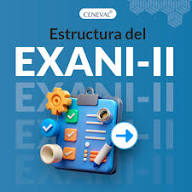

Temario del examen "Exani II"En esta pagina observaras los temas y subtemas que se te podrian presentar en tu examen |
¿Que es el exani II? |
|
El EXANI-II (Examen Nacional de Ingreso a la Educación Superior) es una evaluación estandarizada diseñada por Ceneval en México para medir las habilidades académicas y conocimientos de aspirantes a nivel licenciatura o técnico superior. Consta de 168 preguntas que incluyen áreas transversales (habilidades básicas) y módulos específicos según la carrera, siendo utilizado por la mayoría de las universidades públicas del país. |
|
El exani-II de Ceneval se estructura principalmente en dos grandes bloques: las áreas transversales (comunes para todos) y los módulos de conocimientos específicos (que dependen de tu carrera). |
|
 |
1. Áreas Transversales (Obligatorias) |
|
Estas áreas representan la mayor parte de tu calificación (aproximadamente el 65%). |
|
2. Módulos de Conocimientos Específicos |
|
Debes consultar la convocatoria de tu universidad para saber exactamente cuáles te corresponden (generalmente son dos módulos de 24 reactivos cada uno). Algunos ejemplos incluyen: |
|
3. Inglés (Diagnóstico) |
|
Consejos para tu preparación |
|
Referencias |
Página de Referencias |
Página de Referencias |
Autor de la paginaMaribel Alondra Alvarez Flores |